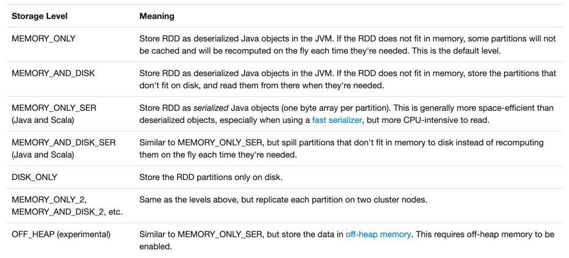

Caching and Persistence
Apache Spark 2.4.1 / Spark SQL
@jaceklaskowski
/
StackOverflow
/
GitHub
The "Internals" Books:
Apache Spark
/
Spark SQL
/
Spark Structured Streaming
## Agenda 1. [Dataset Caching and Persistence](#/intro) 1. [StorageLevel](#/storagelevel) 1. [web UI's Storage Tab](#/web-ui) 1. [CacheManager](#/cache-manager)
## Dataset Caching and Persistence <small>(1 of 2)</small> 1. **Persisting (or caching) a dataset** in memory or disk for faster (local) access 1. **Dataset.cache** persists the Dataset with the default MEMORY_AND_DISK storage level 1. **Dataset.persist** persist the Dataset with a given storage level 1. **Dataset.unpersist** un-persist (removes) any cached block data from memory and disk 1. Switch to [The Internals of Spark SQL](https://bit.ly/spark-sql-internals) * [Dataset Caching and Persistence](https://jaceklaskowski.gitbooks.io/mastering-spark-sql/spark-sql-caching-and-persistence.html)
## Dataset Caching and Persistence <small>(2 of 2)</small> 1. Dataset turns into an RDD at execution time 1. Persisting a Dataset boils down to persisting the RDD 1. RDD blocks are stored on executors only 1. Every executor has exactly one BlockManager 1. BlockManager is a key-value store of blocks of data 1. Switch to [The Internals of Apache Spark](https://bit.ly/apache-spark-internals) * [BlockManager — Key-Value Store of Blocks of Data](https://jaceklaskowski.gitbooks.io/mastering-apache-spark/spark-BlockManager.html)
## StorageLevel <small>(1 of 2)</small> 1. [StorageLevel](http://spark.apache.org/docs/latest/api/scala/index.html#org.apache.spark.storage.StorageLevel) describes how block data of an RDD should be stored: 1. **useDisk** 1. **useMemory** 1. **useOffHeap** 1. **deserialized** 1. **replication** (default: 1) 1. Predefined 12 StorageLevels with functions to create new ones <small>(on the following slide)</small>
## Predefined StorageLevels <small>(2 of 2)</small> <p>  <small>Source: [RDD Persistence](http://spark.apache.org/docs/latest/rdd-programming-guide.html#rdd-persistence)</small> </p>
## web UI's Storage Tab <p> <img style="background:none; border:none; box-shadow:none;" data-src="images/spark-sql-webui-storage-tab.png"> <small>http://localhost:4040/storage/</small> </p> 1. Switch to [The Internals of Apache Spark](https://bit.ly/apache-spark-internals) * [Storage Tab](https://jaceklaskowski.gitbooks.io/mastering-apache-spark/spark-webui-storage.html)
## CacheManager 1. **CacheManager** is an in-memory cache (registry) of structured queries (by their logical plans) 1. Shared across SparkSessions through SharedState * Available as **spark.sharedState.cacheManager** 1. Spark developers interact with CacheManager using Dataset operators (cache, persist, and unpersist) 1. Switch to [The Internals of Spark SQL](https://bit.ly/spark-sql-internals) * [CacheManager — In-Memory Cache for Tables and Views](https://jaceklaskowski.gitbooks.io/mastering-spark-sql/spark-sql-CacheManager.html)
## Recap 1. [Dataset Caching and Persistence](#/intro) 1. [StorageLevel](#/storagelevel) 1. [web UI's Storage Tab](#/web-ui) 1. [CacheManager](#/cache-manager)
# Questions? * Read [The Internals of Apache Spark](https://bit.ly/apache-spark-internals) * Read [The Internals of Spark SQL](https://bit.ly/spark-sql-internals) * Read [The Internals of Spark Structured Streaming](https://bit.ly/spark-structured-streaming) * Follow [@jaceklaskowski](https://twitter.com/jaceklaskowski) on twitter * Upvote [my questions and answers on StackOverflow](http://stackoverflow.com/users/1305344/jacek-laskowski)